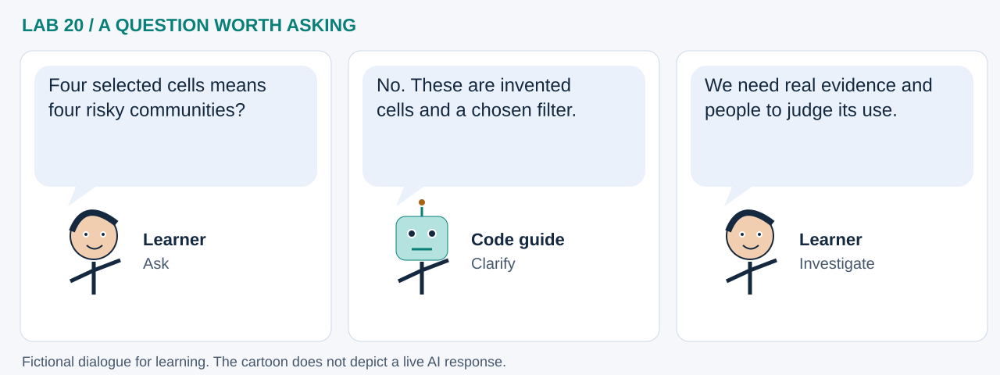

LAB 20 · 32-SECOND VISUAL WALKTHROUGH
From chat to checked evidence
What changed, and what can we responsibly conclude?
Silent, captioned storyboard. Use the player to pause, seek or change playback speed. On a small screen, use fullscreen or read the transcript below. The diagrams explain the method; they are not recordings of a live model run.
Download MP4 · Captions · Open infographic at full size

What runs here?
Python compares feature sets and rejects invalid plans. A local Ollama follow-up is optional and clearly labeled.
A follow-up planning exercise plus deterministic checks and human review; not a world model or clinical system.
Transcript and code landmarks
- 00–08s · Revise
Give the assistant only the checked state needed for a follow-up.
current_plan=baseline - 08–16s · Compare
Inspect membership as well as the seven-to-four count change.
after_ids <= before_ids - 16–24s · Challenge
Demonstrate rejection of unknown layers, URLs and unsafe values.
validate_plan(candidate) - 24–32s · Reflect
Record evidence and disagreement without pretending to validate a health model.
human_approved_for_operational_use
The common misconception

Read the cartoon dialogue
- Four selected cells means four risky communities?
- No. These are invented cells and a chosen filter.
- We need real evidence and people to judge its use.
Try explaining it
Does seven perspectives mean seven independent AI evaluations?
Check your reasoning
No. The card contains authored prompts for people. It neither runs seven agents nor substitutes for external validation.
Original educational illustrations and captions authored for this repository. See the notebook for data and software citations.